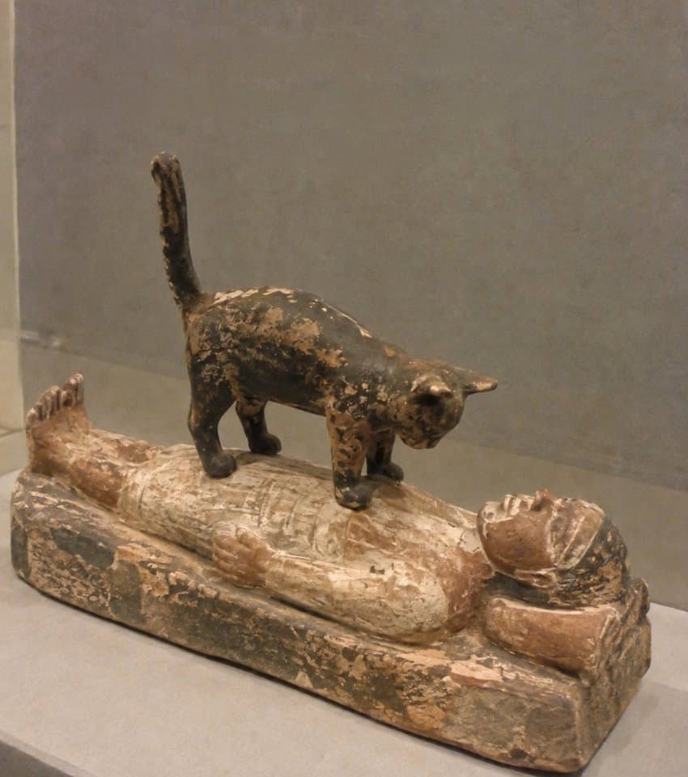
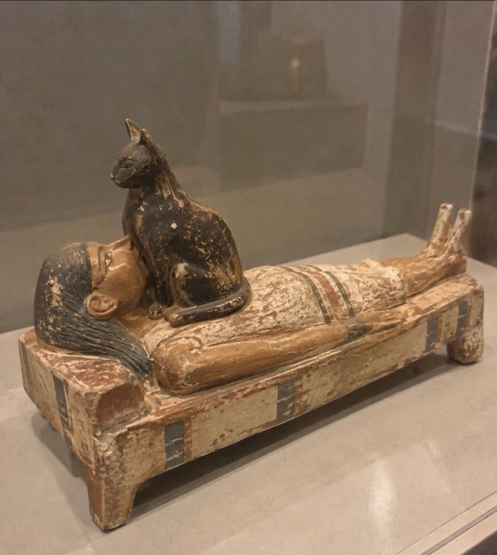

이집트때부터 이어져온 본능임


이집트때부터 이어져온 본능임
막짤 고양이 보빨이야?? ㅗㅜㅑ..
너 보지 어딨는지 모르지
일단 빨어

숨 쉬지 말아주세요 산소 아까워요
배고프면 올라와서 얼굴에 꾹꾹이함 ㅋㅋㅋㅋㅋㅋ
고양이는 이집트가 원래 서식지라던데 생각보다 외형이 별로 안다르네
저걸 또 수천년전에 조각해놓은게 개웃기네 ㅋㅋ
당시 이집트는 고양이를 약간 신성시함

고양이쉑 몇천년전부터 저랬구나
저런거 내쳐야함. 고양이는 자기 불편한거 계속하면 화낸다며
ㅋㅋㅋ
뜨뜻하고 주변보다 약간 높다 = 내자리